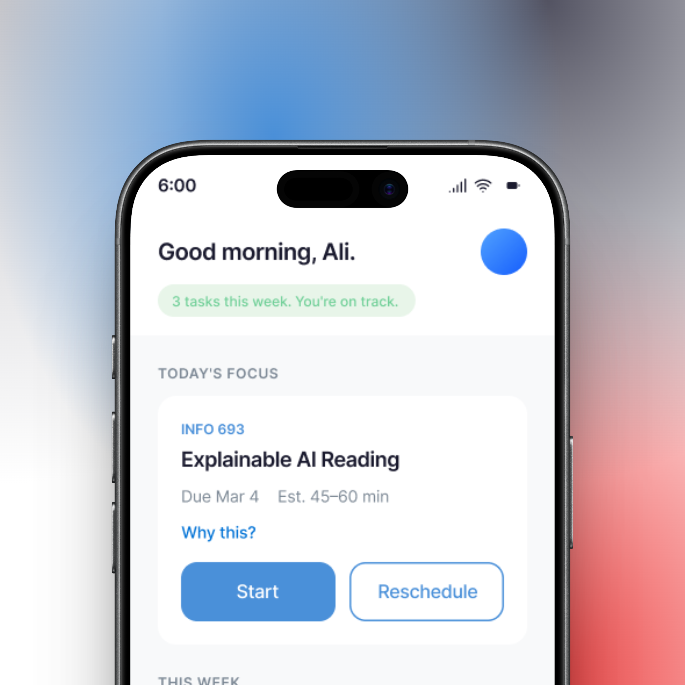
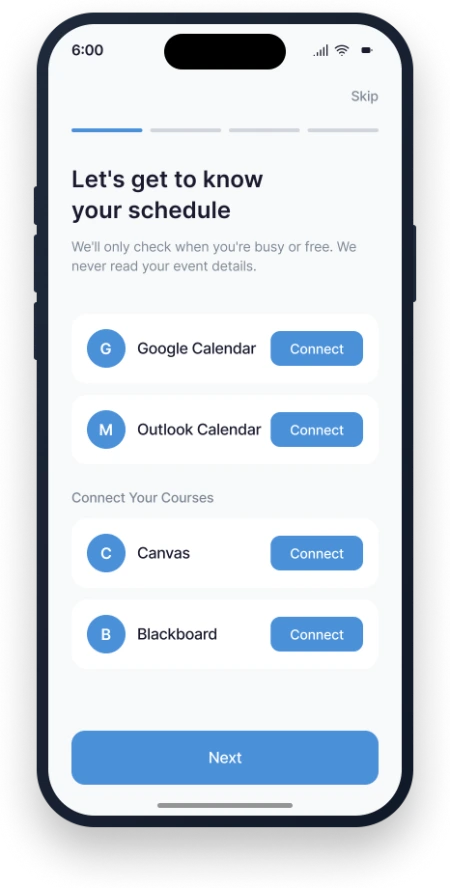
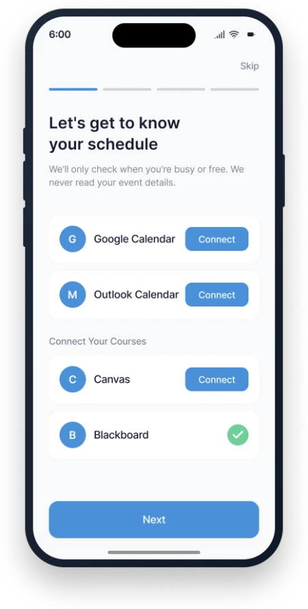
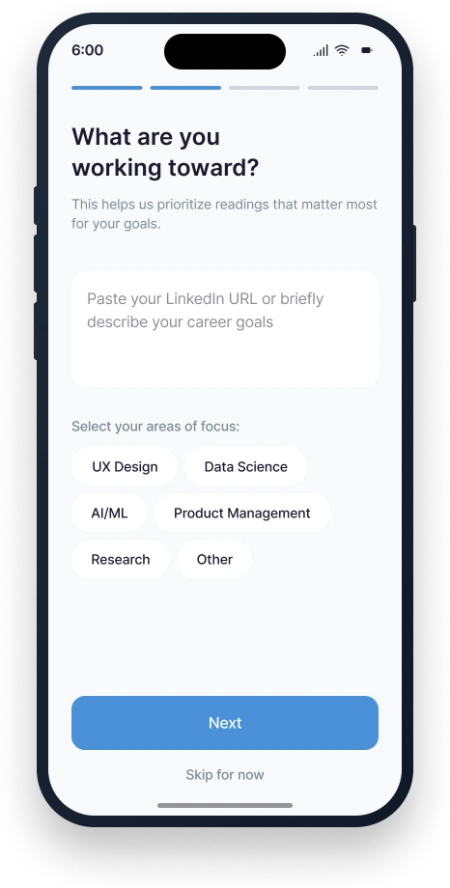
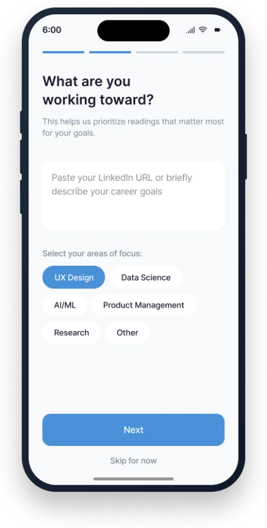
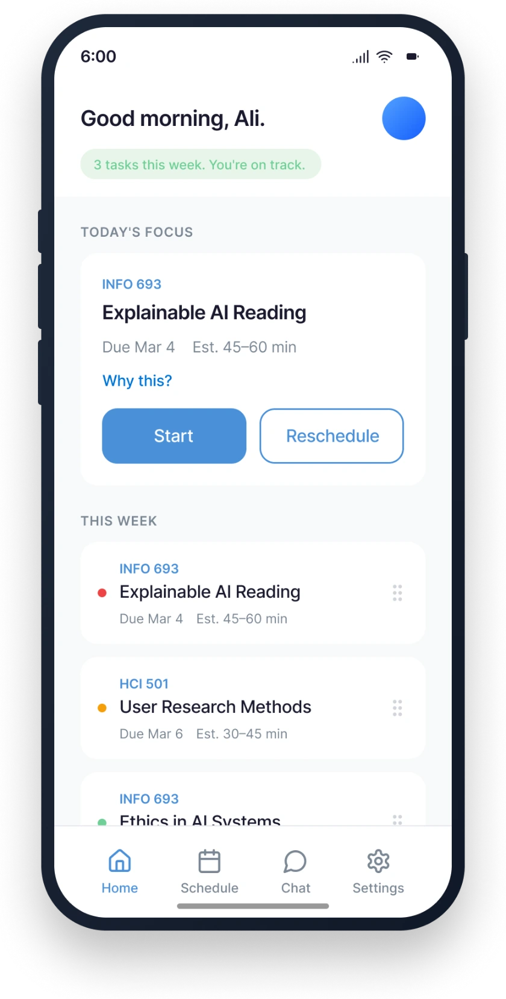
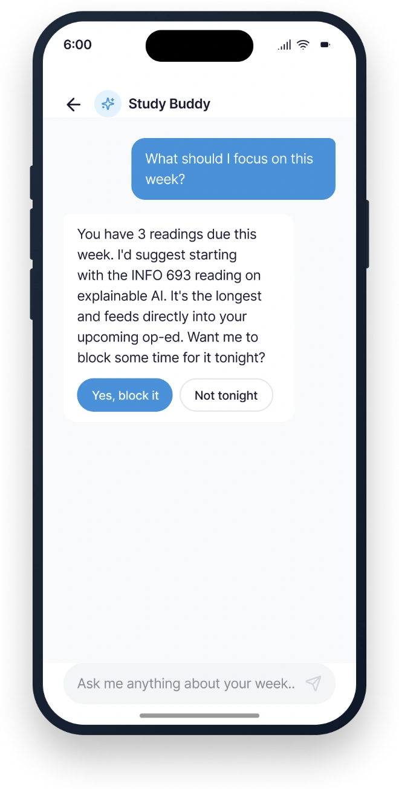
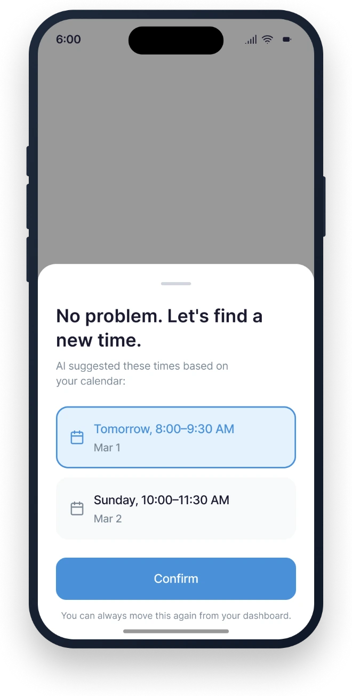

AI Study Buddy
A study companion that decides what to read next, and always shows its reasoning.
Mixed-initiative coursework prioritization for working graduate students, built around explainability, user control, and honest time estimates.

What to do next, and why
AI Study Buddy is a mixed-initiative mobile assistant that ranks a working grad student's coursework by urgency, weight, and available time, then explains every recommendation and lets the student override it. Where a calendar or LMS shows you what is due, this shows you what to do next and why.
I owned the prioritization algorithm, the decision-tree logic that ranks each task, and the user flow through the app, and I co-led the research and information architecture. The prototype and heuristic evaluation were shared team work.
- High-fidelity prototype with two entry points into the same intelligence: chat and dashboard
- Rule-based algorithm proof of concept, fully legible by design
- Heuristic evaluation that turned into a prioritized fix list, including flaws in our own claims
This is a concept project. It was designed and evaluated, not shipped, and every claim below is kept to that scope.
A deciding problem, not a deadline problem
Graduate students who work full-time do not have a deadline problem. They have a deciding problem. Their academic lives sit in Canvas or Blackboard. Their jobs sit in a separate calendar. Their reading lists are longer than any working week can hold. Every existing tool they own treats a two-hour dense theory reading and a five-minute participation quiz as the same kind of row on the same kind of list.
Working grad students are time-strapped. Balancing a full-time job with coursework leaves little slack, and family or caregiving obligations eat further into it.
They cannot read everything. The required volume is often unrealistic for a part-time schedule, so something always gets cut. The question is only what.
They need help deciding what matters most. Reminders are not enough. Under pressure, students default to reading whatever is due soonest, not what is most worth their limited attention.
…help working students prioritize their coursework by learning their schedules, understanding assignment urgency, and recommending which readings to focus on, so they maximize learning outcomes while respecting real time constraints?
Contribution: collaborative problem framing.
Method, stated honestly
Our research was secondary literature plus informal conversations with working grad students. That scope shapes how much the findings can carry: they are directional signals, not validated demand.
The literature gave us the spine of the design:
Guidelines for Human-AI Interaction became our design checklist, mapped guideline by guideline to concrete commitments.
Transparency and trust in algorithmic interfaces: explanation was not a nice-to-have, it was load-bearing for trust.
Framed the actual enemy: planning when to study can cost as much mental effort as the studying itself.
Mixed-initiative interfaces gave us the interaction stance: the system proposes, the human disposes.
The informal conversations pointed the same direction every time. Students said they choose what to read by urgency rather than by learning value, that the volume stresses them out, and that they would welcome guidance only if it explained itself and let them overrule it.
The insight that set the direction: students already have calendars. They already have LMS reminders. Adding another tool that lists tasks would solve nothing.
The gap was never tracking. It was deciding under pressure.
That reframe moved the whole project from "another task manager" to a mixed-initiative decision partner: a system whose job is to recommend, justify, and adapt, while leaving the student in charge.
Contribution: I co-led the research.
From needs to requirements
The research turned into a short, testable set of requirements.
- —Parse course materials for due dates and weights
- —Estimate reading time against available calendar time
- —Generate justified recommendations, not bare rankings
- —Fail gracefully when the AI is wrong: a hallucinated deadline is a quick correction, not a broken schedule
- —Transparency over black-box behavior
- —Seamless integration with tools students already use, so adoption cost stays near zero
- —A hard privacy line: check only whether a calendar slot is busy or free, never read event details
Designing against a standard, not a vibe
Rather than inventing principles, we held the design to Amershi's published Human-AI Interaction guidelines and mapped each one to a concrete commitment we would have to honor. That mapping became the yardstick we later evaluated ourselves against.
The core flow: a single loop
Two entry points into the same intelligence, chat for a conversation and dashboard for a glance, was the pivot of the user flow I designed: it lets the system meet the student wherever their attention already is.
Calendar (Google or Outlook) and LMS (Canvas or Blackboard); optionally add personal context.
The AI reads schedule and readings and estimates effort.
A weekly nudge asks if the student is ready to plan the week.
Chat ("What should I focus on this week?") or the dashboard, a prioritized reading and assignment list.
Tasks get done, with lightweight feedback on each.
The AI refines its next set of estimates, and the loop repeats.
Contribution: I owned the user flow and co-led the IA structure; requirements were shared.
Every screen, paired with the decision behind it
Onboarding: solving the cold start without breaking trust
A recommendation engine with no data recommends nothing useful. Onboarding exists to fill that gap, and it has to do so without spending the trust it will need later. Two decisions carry this screen. First, every step has a Skip button. A student can opt out of the machine-learning data collection entirely and run the app on generic time estimates. Control is offered before anything is asked. Second, the calendar step says plainly that the app checks only busy/free and never reads event details. We ask for goals and focus areas so the AI can weight readings toward what the student cares about, and we let them set check-in frequency so the tool never feels intrusive.

Connect calendar and LMS
Blackboard connected
"What are you working toward?"
Focus area selectedThe prioritization algorithm
My owned contributionThis is the part I designed end to end, so I will go deep.
Decision: a rule-based decision tree, not a machine-learning model. We could have gestured at a neural net. We chose not to. A rule-based tree is fully legible, it can be demonstrated and defended in a design review, and it does exactly what the research demanded of it: it explains itself. A black box would have undercut the entire premise of the product.
Decision: bias toward the student's real risk, not toward tidy sorting. The rules escalate deadline risk first, then weight, and treat time and expertise as modifiers rather than tie-breakers. A reading outside the student's focus area gets a larger time estimate and an earlier flag, because unfamiliar material is exactly what students underestimate.
Decision: a 20–30 minute safety margin on every estimate. Until the system learns a student's actual pace, it pads its prediction. This is a trust decision, not a math one. An honest range that runs slightly long protects the student from the small daily failure of a too-tight estimate.
The dashboard: explainability as a first-class control
The home dashboard shows today's focus and the week's ranked tasks. Three decisions define it. "Why this?" sits on every task: one tap reveals the reasoning behind a recommendation, the Kizilcec finding made literal. Time is shown as a range, never a false-precise number: "Est. 45–60 min" tells the truth about uncertainty where a single "52 min" would fabricate confidence the system has not earned. And priority reads at a glance through colored dots, so a student can triage the week in two seconds without opening anything.

Mixed-initiative: the AI proposes, the student decides
Chat lets a student ask "What should I focus on this week?" and get a reasoned answer with a next action attached ("Want me to block time for it tonight?"). Reschedule is the override made frictionless: when the student cannot do a task now, the AI offers calendar-aware alternatives and the student confirms. The AI never moves the schedule on its own.
Decision: updates run as a nightly batch, not in real time. The algorithm recalculates its time-prediction weights overnight and applies the improved estimates the next morning. Live re-ranking would make the schedule twitch under the student all day, which is precisely the anxiety the product exists to reduce. Stability beat reactivity, on purpose.

"What should I focus on this week?"
"No problem. Let's find a new time."Contribution: I owned the algorithm and decision-tree logic (5.2). Onboarding, dashboard, and the mixed-initiative screens were shared design work.
Evaluating our own design, honestly
We put the prototype through a heuristic evaluation against Nielsen's 10 usability heuristics. This was a team-run review, and its most useful outcome was uncomfortable: it exposed holes in our own design.
The best finding was the one that caught us contradicting ourselves.
The privacy contradiction. Onboarding promises the app never reads event details, yet the reschedule screen displays exact calendar time blocks. A student who notices that stops believing the privacy claim. The fix corrects the disclosure to describe how calendar data is actually used, and adds a data-retention default that purges syllabus and calendar data 30 days after the quarter ends.
No error states. There were no flows for a failed connection or a sync conflict. If the LMS API goes down, the student is stranded. The fix adds clear error states with retry, plus cached-data warnings during sync failures.
The honest caveat: this was a heuristic self-evaluation. Its value was catching contradictions before they reached a build.
Contribution: team-run heuristic evaluation.
What the algorithm taught me
What came of it: a high-fidelity prototype, a working proof of concept for the prioritization algorithm, and an evaluation that turned into a prioritized fix list. As a concept, the project holds together: the interaction stance, the algorithm, and the ethics all point the same way.
The original ambition included a full study-plan generator: NLP that parses any syllabus and a machine-learning model that personalizes over time. We deliberately narrowed that to a rule-based decision tree. That was the right call for a five-week concept, because a legible tree is demonstrable and defensible where a half-trained model would have been neither. It is a scoped limitation, not a failure, and it is the obvious next build.
Designing the algorithm taught me more than a black box would have. Because the logic was legible, I could see its assumptions and argue with them, which is exactly what I would want a student to be able to do with the system itself.
Transparency is load-bearing, not decorative.
Every trust decision in this design, the ranges, the "Why this?" control, the busy/free privacy line, traces back to that. And the evaluation that finds your own contradiction is the valuable one: it would have been easy to run a review that confirmed our choices. The one that caught the privacy inconsistency is the one that made the design better.
- Error states and offline fallbacks
- A privacy-accurate disclosure
- Chat history and manual task entry
- Eventually, the study-plan generator we scoped out
Contribution: personal reflection on designing the algorithm; project outcomes shared across the team.